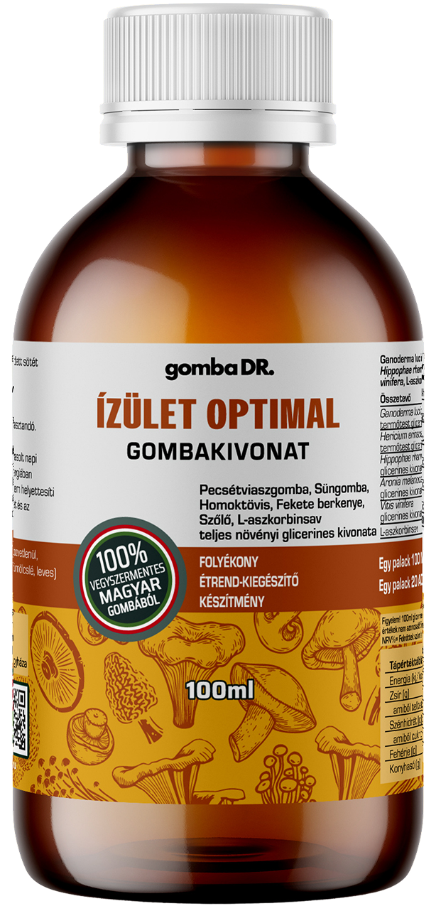
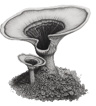
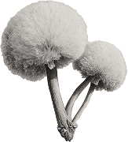
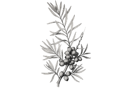
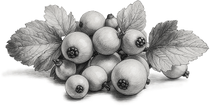
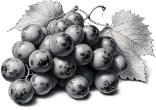
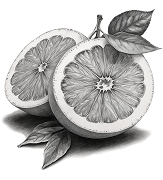

Ízület Optimal gombakivonat
Természetes támogatás az ízületeknek és azon túl
A gomba DR. Ízület Optimal prémium minőségű, folyékony étrend-kiegészítő, amely pecsétviaszgomba, süngomba és háromféle növényi antioxidáns (homoktövis, fekete berkenye, kékszőlő) kivonatát tartalmazza.
Tudományos kutatások alapján az összetevők hozzájárulhatnak:
- Az ízületi panaszok enyhítéséhez, a porckopás lassításához
- A pecsétviaszgomba vizes oldata az oszteoblasztok (csontképző sejtek) aktivitását segíti.
- A pecsétviaszgomba ganoderiksav hatóanyaga lassíthatja a csontok leépítését.
- A süngomba védi, támogatja az idegsejteket, idegvégződéseket.
- A gyógygombák segítik a kollagén termelődését.
Összevetők

Pecsétviaszgomba
Ganoderma lucidum
Gyulladáscsökkentő, antioxidáns és immunerősítő.

Süngomba
Hericium erinaceus
Idegrendszeri táplálás, porc- és nyálkahártya-védelem, idegvégződések támogatása, védelme.

Homoktövis
Hippophae
Sejtvédelem, antioxidáns hatás.

Fekete berkenye
Aronia prunifolia
Húgysavszint-csökkentés, ízületi védelem.

Kékszőlő
Vitis vinifera
Flavonoidokkal a porcvédelemért.

C-vitamin
Acidum ascorbicum
Kollagéntermelés, immunitás, antioxidáns támogatás